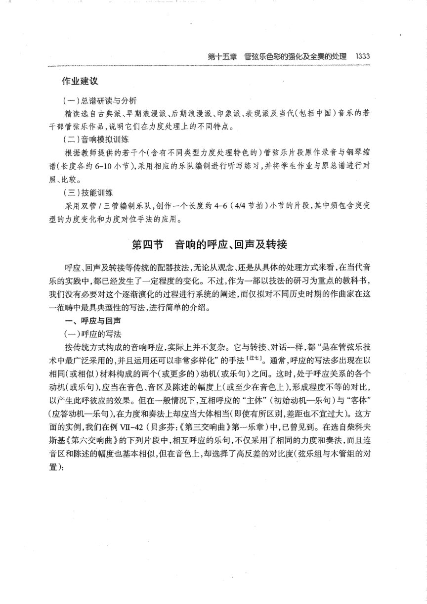
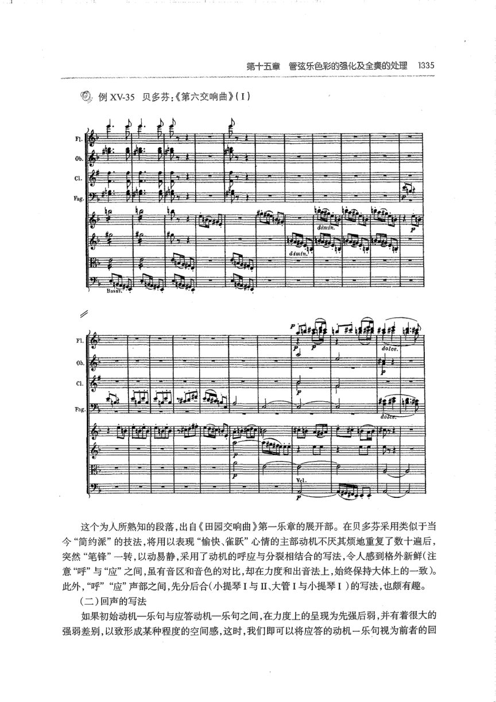
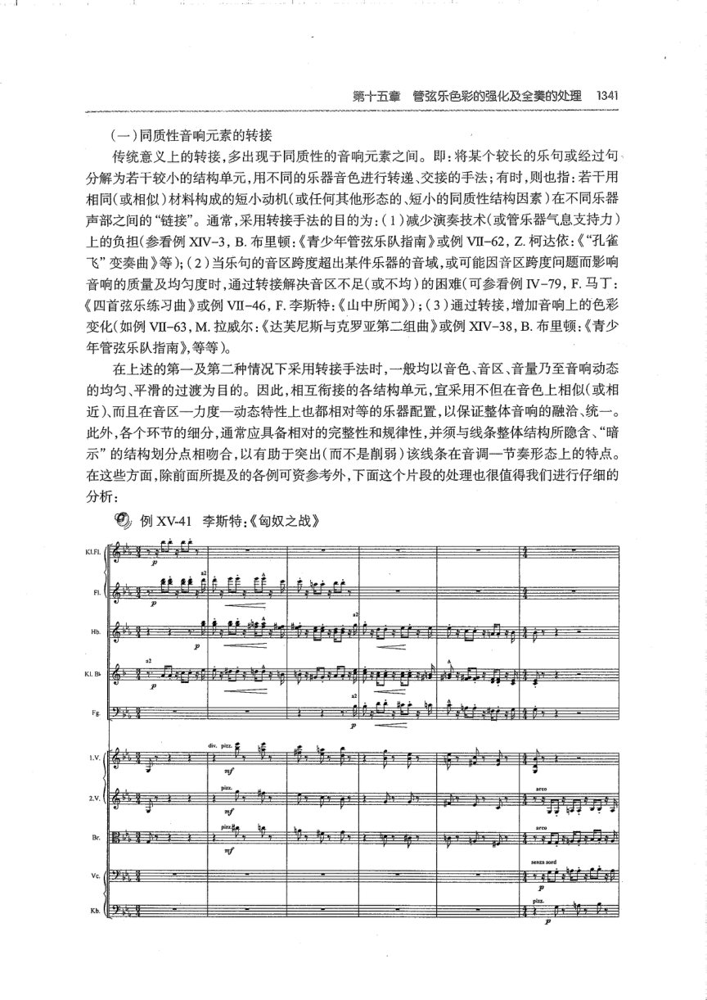
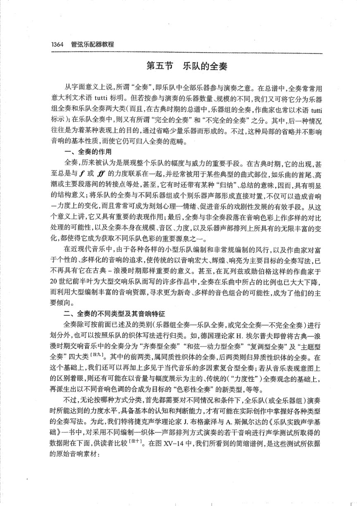

PDF 第 3 页
杨立青下 · 印刷 p.1025 · 第十三章 铜管乐器性能分论 · 圆号
第十三章铜管乐器性能分论1025
第十三章铜管乐器性能分论
第一节圆号
[意］Corno; Corno a pistoni
[英］Horn;French horn
[德]Hom
[法]Cor;Cor apistons
圆号，又称“法国号”。相传，它的原始形式一—将号管卷曲成多重圆形的号角一一早在
14世纪（一说为12世纪）已出现于欧洲【注-1；约至1660-1670年左右，圆号的“直系祖先”—
一种以“狩猎号角”闻名于世的自然铜管乐器才产生于法国，稍后又流传于德国。在整个18
世纪至19世纪初漫长的百余年间，经由乐器结构与演奏方法上的不断演变，自然圆号发展为
包括了C调(中音）降B（或B)调(中音）A（或降A)调、G调、F（或升F)调、E调、降E调、
D（或降D)调、C调、B调，以及降B调(低音）A（或降A）调(低音）等多种形制的庞大“族
群”，并被广泛地运用于管弦乐队中。1813年，双活塞装置的发明，及1819年第一支三活塞圆
号的出现，标志着新一代圆号的诞生；至1898年，德国人E.克鲁斯帕（E.Kruspe）制造出了有
史以来第一支双调圆号，其结构已与现代圆号相差无几。
现代交响乐队中常见的圆号，大多用回旋式活塞。它们的管身细长（F调/369厘米、F一
降B双调/370-274厘米），卷曲多重呈圆形，号管近号嘴的一端及近喇叭口的一端均为圆锥
形，中段为圆柱形，号嘴则呈漏斗状；主要形制有F调及F一降B双调圆号两种。前者除备有
我们在前一章中已述及的三活塞基本系统外，尚装置有可将单个音的音高降低小二度的、专用
于演奏闭塞音的所谓“闭塞键”（亦称“闭塞音活塞”，详见后述）；而F一降B双调圆号则除基
本系统外，尚装有一个可将F调圆号的整个音域移高四度至降B调的第四活塞（或称“四度活
塞”)，因它由左手拇指（thumb）按键启动，常被简称为“T键”。在此基础上，假如再按下“闭
塞键”，则还可将整个音域移低半音至A调，故也有人把这种圆号称作F一降B一A三调圆号
（在英国，还有主要用于改善高音区音质的F一高音F调双重圆号及F—降B一高音F调三重
圆号)[注二。除此之外，今天在某些交响乐队中，偶或也可见到圆号的代用品一—降E调和F
调美乐号（Mellophone,或Mellophonium）[三1,及瓦格纳大号（详见后述）。图Xm-1是目前最
常见的F一降B双调圆号的外形图示：
PDF 第 311 页
杨立青下 · 印刷 p.1333 · 第十五章 · 呼应与回声
第十五章管弦乐色彩的强化及全奏的处理
1333
作业建议
（一）总谱研读与分析
精读选自古典派、早期浪漫派、后期浪漫派、印象派、表现派及当代(包括中国）音乐的若
干部管弦乐作品，说明它们在力度处理上的不同特点。
（二）音响模拟训练
根据教师提供的若干个(含有不同类型力度处理特色的）管弦乐片段原作录音与钢琴缩
谱（长度各约6-10小节），采用相应的乐队编制进行听写练习，并将学生作业与原总谱进行对
照、比较。
(三)技能训练
采用双管/三管编制乐队，创作一个长度约4-6（4/4节拍）小节的片段，其中须包含突变
型的力度变化和力度对位手法的应用。
第四节音响的呼应、回声及转接
呼应、回声及转接等传统的配器技法，无论从观念、还是从具体的处理方式来看，在当代音
乐的实践中，都已经发生了一定程度的变化。不过，作为一部以技法的研习为重点的教科书，
我们没有必要对这个逐渐演化的过程进行系统的阐述，而仅拟对不同历史时期的作曲家在这
一范畴中最具典型性的写法，进行简单的介绍。
一、呼应与回声
（一）呼应的写法
按传统方式构成的音响呼应，实际上并不复杂。它与转接、对话-样，都“是在管弦乐技
术中最广泛采用的，并且运用还可以非常多样化”的手法[注七]。通常，呼应的写法多出现在以
相同（或相似)材料构成的两个(或更多的)动机(或乐句)之间。这时，处于呼应关系的各个
动机（或乐句），应当在音色、音区及陈述的幅度上(或至少在音色上），形成程度不等的对比，
以产生此呼彼应的效果。但在一般情况下，互相呼应的“主体”（初始动机一乐句）与“客体”
（应答动机一乐句），在力度和奏法上却应当大体相当（即使有所区别，差距也不宜过大）。这方
面的实例，我们在例VI-42（贝多芬：《第三交响曲》第一乐章）中，已曾见到。在选自柴科夫
斯基《第六交响曲》的下列片段中，相互呼应的乐句，不仅采用了相同的力度和奏法，而且连
音区和陈述的幅度也基本相似，但在音色上，却选择了高反差的对比度（弦乐组与木管组的对
置)：
PDF 第 313 页
杨立青下 · 印刷 p.1335 · 第十五章 · 回声的写法
第十五章管弦乐色彩的强化及全奏的处理
1335
例XV-35贝多芬：《第六交响曲》（1）
这个为人所熟知的段落，出自《田园交响曲》第一乐章的展开部。在贝多芬采用类似于当
今“简约派”的技法，将用以表现“愉快、雀跃”心情的主部动机不厌其烦地重复了数十遍后，
意“呼”与“应”之间，虽有音区和音色的对比，却在力度和出音法上，始终保持大体上的一致）。
此外，“呼”“应”声部之间，先分后合（小提琴I与ⅡI、大管I与小提琴I）的写法，也颇有趣。
（二）回声的写法
如果初始动机一乐句与应答动机一乐句之间，在力度上的呈现为先强后弱，并有着很大的
强弱差别，以致形成某种程度的空间感，这时，我们即可以将应答的动机一乐句视为前者的回
PDF 第 319 页
杨立青下 · 印刷 p.1341 · 第十五章 · 音响的转接
第十五章管弦乐色彩的强化及全奏的处理
1341
（一）同质性音响元素的转接
传统意义上的转接，多出现于同质性的音响元素之间。即：将某个较长的乐句或经过句、
分解为若干较小的结构单元，用不同的乐器音色进行转递、交接的手法；有时，则也指：若干用
相同(或相似)材料构成的短小动机(或任何其他形态的、短小的同质性结构因素)在不同乐器
声部之间的“链接”。通常，采用转接手法的目的为：（1）减少演奏技术(或管乐器气息支持力）
上的负担（参看例XIV-3，B.布里顿：《青少年管弦乐队指南》或例VI-62，Z.柯达依：《“孔雀
飞”变奏曲》等）；（2）当乐句的音区跨度超出某件乐器的音域，或可能因音区跨度问题而影响
音响的质量及均匀度时，通过转接解决音区不足(或不均)的困难（可参看例IV-79，F.马丁：
《四首弦乐练习曲》或例VⅡ-46，F.李斯特：《山中所闻》）；（3）通过转接，增加音响上的色彩
变化（如例VII-63，M.拉威尔：《达芙尼斯与克罗亚第二组曲》或例XIV-38，B.布里顿：《青少
年管弦乐队指南》，等等）。
在上述的第一及第二种情况下采用转接手法时，一般均以音色、音区、音量乃至音响动态
的均匀、平滑的过渡为目的。因此，相互衔接的各结构单元，宜采用不但在音色上相似（或相
近）而且在音区一力度一动态特性上也都相对等的乐器配置，以保证整体音响的融洽、统一。
此外，各个环节的细分，通常应具备相对的完整性和规律性，并须与线条整体结构所隐含、“暗
示”的结构划分点相吻合，以有助于突出（而不是削弱）该线条在音调一节奏形态上的特点。
在这些方面，除前面所提及的各例可资参考外，下面这个片段的处理也很值得我们进行仔细的
分析：
例XV-41李斯特：《匈奴之战》
1.F1
Hb
PDF 第 342 页
杨立青下 · 印刷 p.1364 · 第十五章 · 乐队的全奏
1364管弦乐配器教程
第五节乐队的全奏
从字面意义上说，所谓“全奏”，即乐队中全部乐器参与演奏之意。在总谱中，全奏常常用
意大利文术语tutti标明。但若按参与演奏的乐器数量、规模的不同，我们又可将它分为乐器
组全奏和乐队全奏两大类（而且，在古典时期的总谱中，乐器组的全奏，作曲家也常以术语tutti
标示；在乐队全奏中，则又有所谓“完全的全奏”和“不完全的全奏”之分。其中，后一种情况
往往是为着某种表现上的目的，通过省略少量乐器而形成的。不过，这种局部的省略并不影响
音响的基本性质，而使它仍可归人全奏的范畴。
一、全奏的作用
全奏，历来被认为是展现整个乐队的幅度与威力的重要手段。在古典时期，它的出现，甚
至总是与f或f的力度联系在一起，并经常被用于某些典型的曲式部位，如乐曲的首尾、高
潮或主要段落间的转接点等处，甚至，它有时还带有某种“归纳”总结的意味，因而，具有明显
的结构意义；将乐队的全奏与不同乐器组或个别乐器声部形成直接对置，不仅可以造成音响
一力度上的变化，而且常常可成为刻划心理一情绪、促进音乐的戏剧性发展的有效手段。从这
个意义上讲，它又具有重要的表现作用；最后，全奏与非全奏段落在音响色彩上作多样的对比
处理的可能性，以及全奏本身在规模、音区、力度，以及乐器声部排列上所具有的无限丰富的变
化，都使得它成为获取不同乐队色彩的重要源泉之-一。
在近现代音乐中，由于各种各样的小型乐队编制和非常规编制的风行，以及作曲家对富
于个性的、多样化的音响的追求，使传统的以音响宏大、辉煌、响亮为主要目标的全奏写法，已
不再具有它在古典－浪漫时期那样重要的意义。甚至，在瓦列兹或勋伯格这样的作曲家于
20世纪前半叶为大型交响乐队而写的许多作品中，全奏在乐曲中所占的比例也已大大下降，
而利用大型编制丰富的音响资源，寻求更为新奇、多样的音色组合的可能性，成为了他们的主
要倾向。
二、全奏的不同类型及其音响特征
全奏除可按前面已述及的类别（乐器组全奏一乐队全奏，或完全全奏一不完全全奏）进行
划分外，也可以按照乐队的织体写法进行归类。如，德国理论家H.埃尔普夫即曾将古典一浪
漫时期交响音乐中的全奏分为“齐奏型全奏”“和弦一动力型全奏”“复调型全奏”及“主题型
全奏”四大类[注九]。其中的前两类,属同质性织体的全奏，后两类则归异质性织体的全奏。在
这个基础上，我们还可以再加上多见于当代音乐的多因素复合型全奏；若从音乐表现意图上
的区别着眼，则还有可能在以音量与幅度展示为主的、传统的（“力度性”）全奏观念的基础上，
再派生出以不同音响色调的合成为目标的“色彩性全奏”的新类型，等等。
不过，无论按哪种方式分类，首先都需要对不同情况和条件下，全乐队(或全乐器组)演奏
时所能达到的力度水平，具备基本的认知和判断能力，才有可能在实际创作中掌握好各种类型
的全奏写法。为此，我们特将捷克声学理论家J.布格豪泽与A.斯佩尔达的《乐队实践声学基
础》一书中，对采用不同编制一织体一声部排列方式演奏的若干音响进行声学测试所取得的
数据附在下面，供读者比较[注+]。在图XV-14中,我们所看到的简缩谱例,是这些测试所依据
的原始音响素材：